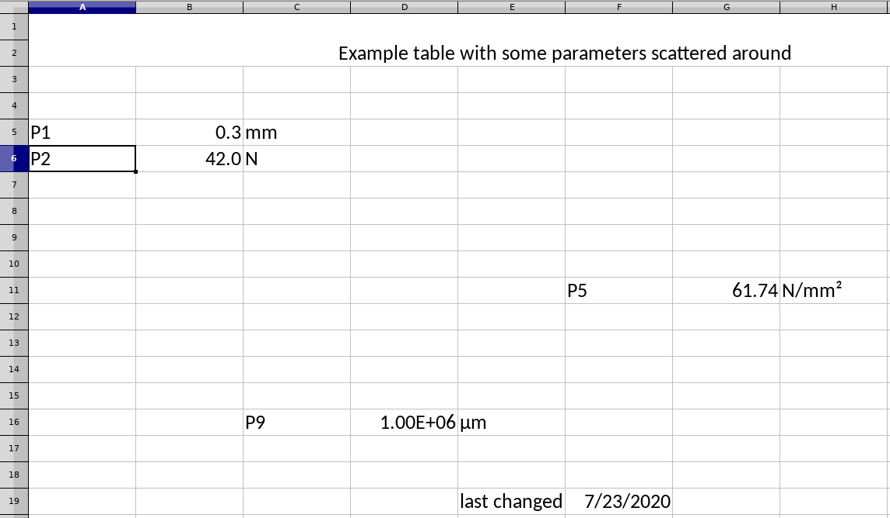

Interacting with MS Excel
A popular package that provides a pythonic representation of MS Excel workbooks/worksheets is openpyxl.
> pip3 install openpyxl
Open a worksheet
import openpyxl
workbook = openpyxl.load_workbook("parameters.xlsx")
worksheet = workbook.active
you can also select the worksheet by name
worksheet_by_name = workbook["Tabelle1"]
assert worksheet == worksheet_by_name
Reading from a worksheet
You can either access cells by name …
print("Cell A6 contains:", worksheet["A6"].value)
… or by index.
print("Cell (6,1) contains:", worksheet.cell(6, 1).value)
assert worksheet["A6"].value is not None
assert worksheet["A6"] == worksheet.cell(6, 1)
Note that openpyxl uses one-based-indexing. So in contrast to python lists or
numpy, where the first entry is list[0] or numpy.array[0,0], the first
cell in the worksheet is cell(1,1).
Openpyxl lets you conveniently loop through the cells of the worksheet, e.g. to find the cell that containts “P2” and to access its right neighbor.
for row in worksheet:
for cell in row:
if cell.value == "P2":
i, j = cell.row, cell.column
print("Found P2 at cell:", i, j)
print("Cell right of P2 has value:", worksheet.cell(i, j + 1).value)
Modifying a worksheet
Similar to reading cells, you can assign values by name or index.
worksheet["B11"] = "P_new"
worksheet["C11"] = 17.0
assert worksheet.cell(11, 3).value == 17.0 # C-->3
worksheet.cell(11, 3).value = 6174.0
Don’t forget to save the modified workbook.
workbook.save("parameters_modified.xlsx")
Use cases
You can now get creative and write a function that finds the position of a string within a worksheet …
def row_col_of(ws, parameter_name):
for row in ws:
for cell in row:
if cell.value == parameter_name:
return cell.row, cell.column
raise RuntimeError(f'There is no cell containing "{parameter_name}" in {ws}.')
… to extract parameter values from the worksheet …
i, j = row_col_of(worksheet, "P2")
P2_value = worksheet.cell(i, j + 1).value
and write it to a different file, e.g. by replacing a known placeholder with
the value. We therefore load a base_input_file.dat (containing the placeholders),
1* This is a made-up input file for the
2* Tool <ANSYS, ABACUS, you name it...>
3* that contains some fixed parameters,
4* and some that can be defined within
5* a workflow.
6
7MESH = "bridge_fine.xdmf";
8E = 20000.0;
9nu = 0.3;
10P2 = P2_PLACEHOLDER;
11delta_t = 0.1;
12boundary = "periodic";
13
14...
replace the placeholder with our value from the Excel sheet and save it to a different file.
s = open("base_input_file.dat", "r").read()
s_modified = s.replace("P2_PLACEHOLDER", str(P2_value))
open("input_file_modified.dat", "w").write(s_modified)
Further reading
Basic web searches like
“python read file”
“python loop through file line by line”
“python replace string in file”
…
will often lead you to stackoverflow.com
are often faster than reading whole tutorials
can result in ugly code, but that is OK.